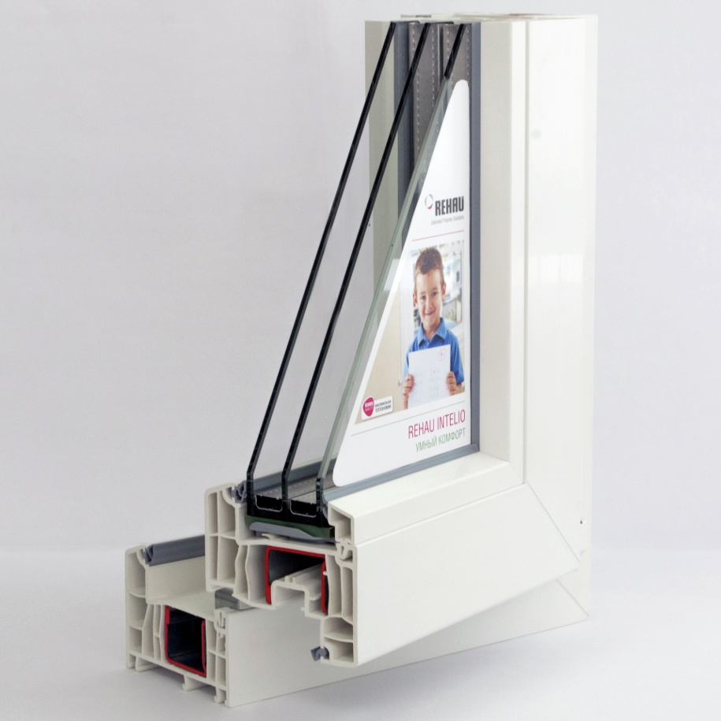
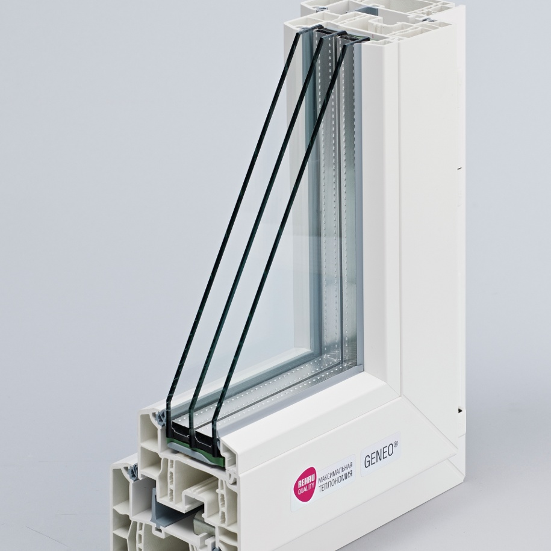
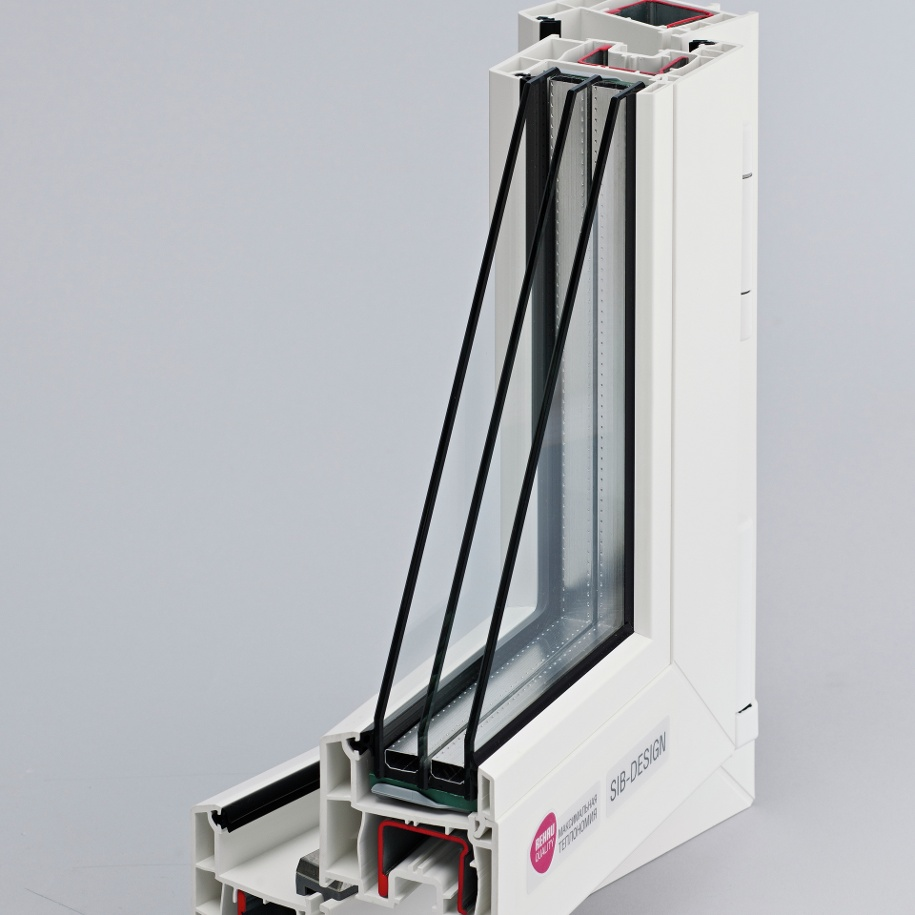
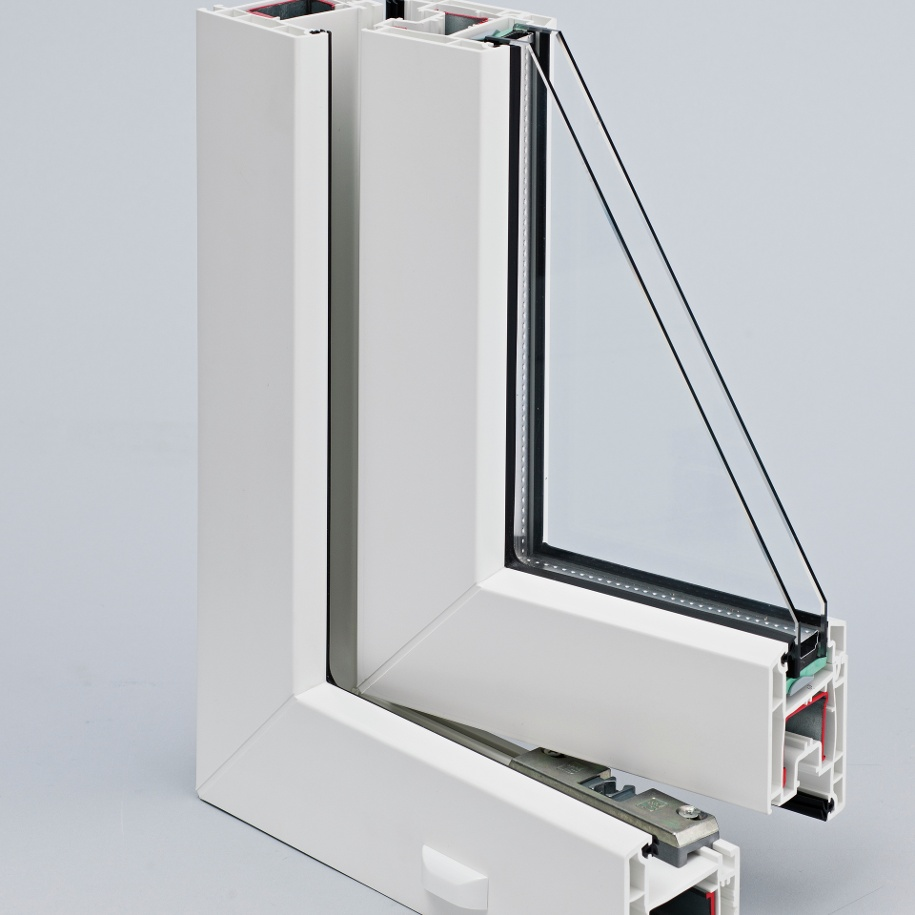
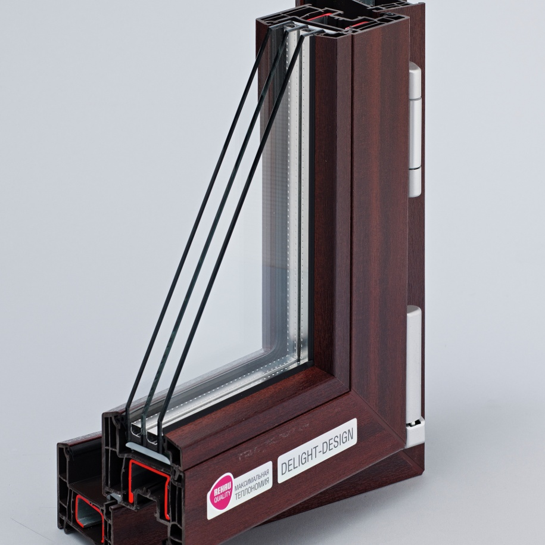

Окна Rehau
Rehau на рынке с 1948 года! Немецкая компания, которая специализируется на производстве высококачественных профилей для изготовления оконных систем и конструкций. Это одно из направлений ее деятельности, инновации Rehau применяются в строительстве и других сферах. Корпорация Rehau имеет официальное представительство в России и является надежным поставщиком профилей и специальных технологий производства окон, а благодаря сотрудничеству мы можем изготавливать окна высокого качества в большом ассортименте и различных ценовых категорий. Каждая серия профилей имеет свои отличительные характеристики, но всех их объединяет одно – немецкое качество. Предлагаем Вам ознакомиться с рядом моделей оконных профилей Rehau.
REHAU BLITZ
Ширина профиля – 60 мм
Число воздушных камер – 3 шт.
Контуры уплотнения – 2 шт.
Самая запрашиваемая и востребованная модель среди потребителей, благодаря своему непревзойденному качеству и доступной финансовой категории. Blitz! Это стандарт качества с идеально гладкой поверхностью профиля, удобной для ухода, с отличными воздухо- и водонепроницаемыми свойствами.
REHAU SIB-Design
Ширина профиля – 70 мм
Число воздушных камер – 4 шт.
Контуры уплотнения – 2 шт.
SIB! Система разработана специально для морозов и холодов России. Окна из профилей Rehau Sib обеспечивают отличную теплоизоляцию помещения, благодаря трехкамерному стеклопакету и специальному «термо-блоку». Вы никогда не замерзнете у себя в квартире зимой с такими окнами.
REHAU DELIGHT-Design
Ширина профиля – 70 мм
Число воздушных камер – 5 шт.
Контуры уплотнения – 2 шт.
Окна Rehau Delight не просто сохранят тепло и уют в Вашем доме, но и обеспечат на 10% больше проникновения солнечного света. Это отличительная особенность окон серии Delight. Такие окна очень хорошо пропускают лучи света, а особенно если они выходят на солнечную сторону дома. В городе Санкт-Петербурге порой света очень не хватает, а хмурая погода может сказываться на нашем моральном и физическом состоянии. С окнами Rehau Delight обстановка в доме будет Вас только бодрить и радовать своей светлостью и эстетичностью.
REHAU BRILLANT-Design
Ширина профиля – 80 мм
Число воздушных камер – 5 шт.
Контуры уплотнения – 2 шт.
Премиум-класс начинается с окон профиля Rehau Brilliant Design. Эстетичны, элегантны, эксклюзивны. Потрясающее качество и дизайн не оставят равнодушными даже самых искушенных ценителей. Используются в строительстве элитного жилья благодаря своим непревзойденным формам и преимуществам. Окна Rehau Brilliant сочетают в себе все самые лучшие технические свойства: обладают шумо- и теплоизоляцией и инновационным дизайном.
REHAU INTELIO
Ширина профиля – 86 мм
Число воздушных камер – 6 шт.
Контуры уплотнения – 3 шт.
Окна серии Rehau Intelio входят в состав окон премиум-класса. Эти окна известны и популярны благодаря своей отличительной особенности – высочайшей степенью звукоизоляции. Установку таких окон часто запрашивают различные студии звукозаписи, здания продюсерских центров и современных концертных залов, где преобладает громкий звук. Окна серии Rehau Intelio изолируют не только звуки внутри помещения, но и, естественно, само помещение от посторонних звуков извне. Поэтому Вы, без сомнения, можете заказать их установку к себе в квартиру или в дом. Немецкое качество гарантировано!
GENEO
Ширина профиля – 86 мм
Число воздушных камер – 6 шт.
Контуры уплотнения – 3 шт.
Окна профиля Rehau Geneo обладают высокой степенью прочности. Эти уникальные оконные конструкции производятся с добавлением специального углеволокна, инновационного фиброволокна, благодаря чему изделия обретают максимальную прочность, стойкость к нагрузкам и лишаются необходимости армирования. Также обладают высокой тепло-, звукоизоляцией и беспредельными возможностями для дизайна.
Входные системы REHAU
Профили Rehau используют не только для изготовления окон, остекления лоджий, балконов, фасадного остекления, но и в производстве новейших дверных систем. Вариантов много: металлопластиковые перегородки, офисные перегородки, ограждения, создание специальных зон и раздвижных систем. Вы выбираете назначение, определяете конфигурацию конструкции, а мы изготавливаем и осуществляем монтаж. Как и окна, металлопластиковые двери можно создавать по различному дизайну, используя все преимущества и возможности производства.